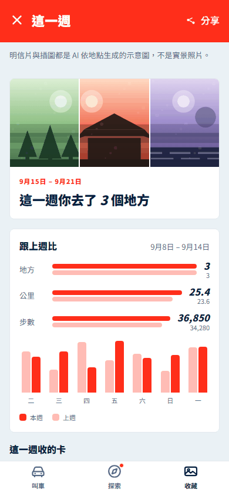

不搭車的日常
不搭車也玩得下去；推薦有個人化的依據；動機來自內容，不是獎勵。
「路過一百次都是灰的，走進去一次就有顏色。」
看早上到晚上提給 yoxi（和泰叫車）的產品提案 · 2026 和泰 AI 黑客松
「遊喜樂」把叫車 app 變成一個不搭車也會打開的城市探索與收藏工具：一天一個離你不遠的地方，走得到就走，走不到就用 yoxi 去。到了才上色，收進你的城市。
地圖 © OpenStreetMap 貢獻者
yoxi 的處境
不搭車的日子，yoxi 就安靜了。題目問的是「不搭車，也打開 yoxi」。我們的答案不是再送一張券，而是給它一個跟車無關的理由。
A · 不搭車的日常


試試看
真實新竹街道（OpenStreetMap）。點地圖上的灰 pin 看它是什麼、離你多遠；走得到的主按鈕是「走路前往」，超過 3 公里就變成「設為下車點」。按「走進去」，它才上色。
走不到才叫車
線的這一邊，遊喜樂是走路的理由；線的那一邊，它一鍵變成 yoxi 的下車點。內灣老街 28 公里，車資約 $691、65 分，搭車回饋 34 點，走不到的地方搭車抵達另 +50 點。
車資 75 + 22 × km、車程 3 + 2.2 × km 分、走路 m ÷ 75 分、每 20 元 1 點無條件捨去——都是 app 原型的公式，接上 yoxi 真實估價就能換。+50 是原型畫面的固定值；簡報建議依距離分 20／35／50 三級加每月上限。
B · 搭車的轉換


C · 晚上的回顧





AI 的角色
推薦今天的地方、起草地方內容給編輯審、生成明信片與長輩圖、把一天寫成回顧。「設為下車點」是產品設計，不是 AI。
叫車沒有變難用
遊喜樂全部加在叫車首頁之外；首頁只多一個可以關掉的圖層。關掉圖層，DOM 逐節點跟現況相同。
量在原型 prototype/screens/home.html；合一版 app 只有「叫車地圖最多 4 個景點」有測試。一個指令可重跑：python prototype/tools/verify-quiet.py。第 7 條還沒定義怎麼量，所以先不開。
給 yoxi 的路線圖
2 分鐘
往下挖